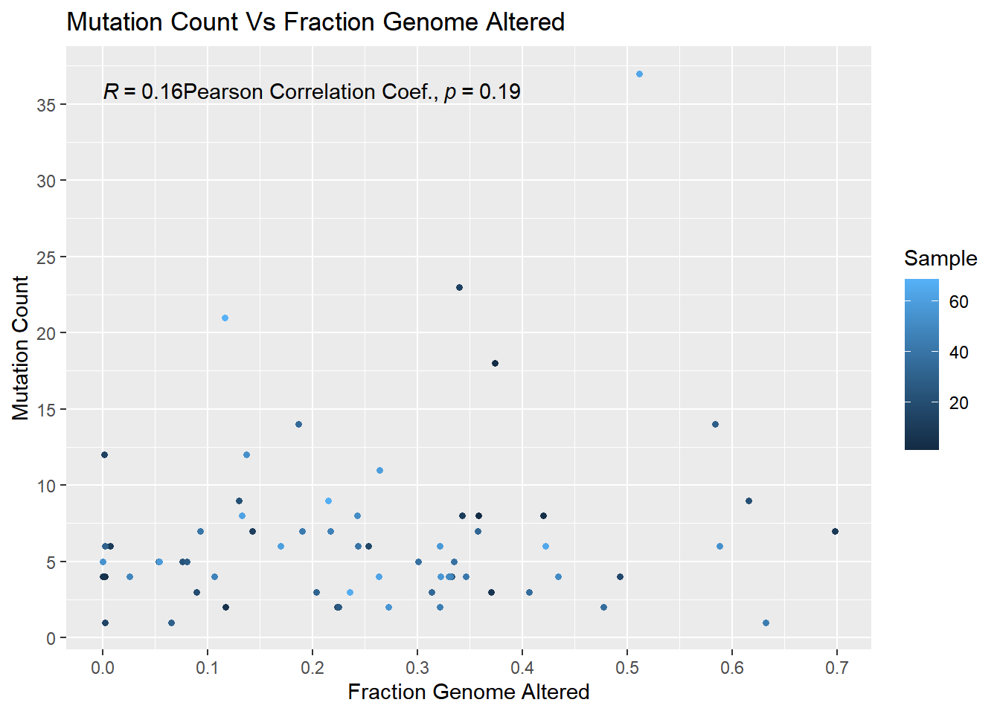
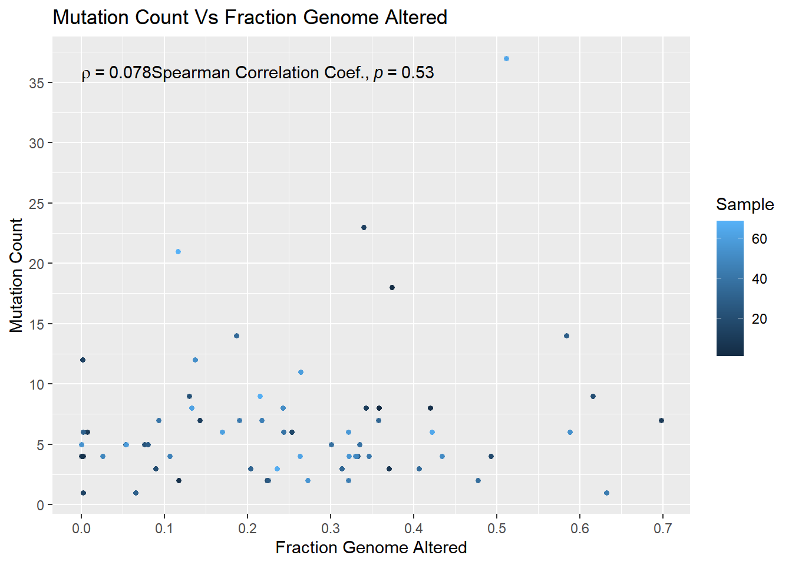

Last updated: 2022-11-17
Checks: 6 1
Knit directory: myproject/
This reproducible R Markdown analysis was created with workflowr (version 1.7.0). The Checks tab describes the reproducibility checks that were applied when the results were created. The Past versions tab lists the development history.
Great! Since the R Markdown file has been committed to the Git repository, you know the exact version of the code that produced these results.
Great job! The global environment was empty. Objects defined in the global environment can affect the analysis in your R Markdown file in unknown ways. For reproduciblity it’s best to always run the code in an empty environment.
The command set.seed(20221022) was run prior to running
the code in the R Markdown file. Setting a seed ensures that any results
that rely on randomness, e.g. subsampling or permutations, are
reproducible.
Great job! Recording the operating system, R version, and package versions is critical for reproducibility.
Nice! There were no cached chunks for this analysis, so you can be confident that you successfully produced the results during this run.
Using absolute paths to the files within your workflowr project makes it difficult for you and others to run your code on a different machine. Change the absolute path(s) below to the suggested relative path(s) to make your code more reproducible.
| absolute | relative |
|---|---|
| ~/Desktop/myproject/data/mixed_impact_subset_2022/data_clinical_patient.txt | data/mixed_impact_subset_2022/data_clinical_patient.txt |
| ~/Desktop/myproject/data/mixed_impact_subset_2022/data_clinical_sample.txt | data/mixed_impact_subset_2022/data_clinical_sample.txt |
| ~/Desktop/myproject/data/mixed_impact_subset_2022/data_cna.txt | data/mixed_impact_subset_2022/data_cna.txt |
| ~/Desktop/myproject/data/mixed_impact_subset_2022/data_mutations.txt | data/mixed_impact_subset_2022/data_mutations.txt |
| ~/Desktop/myproject/data/mixed_impact_subset_2022_clinical_data.txt | data/mixed_impact_subset_2022_clinical_data.txt |
Great! You are using Git for version control. Tracking code development and connecting the code version to the results is critical for reproducibility.
The results in this page were generated with repository version a556d93. See the Past versions tab to see a history of the changes made to the R Markdown and HTML files.
Note that you need to be careful to ensure that all relevant files for
the analysis have been committed to Git prior to generating the results
(you can use wflow_publish or
wflow_git_commit). workflowr only checks the R Markdown
file, but you know if there are other scripts or data files that it
depends on. Below is the status of the Git repository when the results
were generated:
Ignored files:
Ignored: .Rhistory
Ignored: .Rproj.user/
Ignored: R-output_files/
Untracked files:
Untracked: data/mixed_impact_subset_2022/
Untracked: data/mixed_impact_subset_2022_clinical_data.txt
Untracked: data/pancan_pcawg_2020/
Untracked: data/pancan_pcawg_2020_clinical_data.txt
Untracked: site_libs/
Unstaged changes:
Modified: analysis/R-output.Rmd
Note that any generated files, e.g. HTML, png, CSS, etc., are not included in this status report because it is ok for generated content to have uncommitted changes.
These are the previous versions of the repository in which changes were
made to the R Markdown (analysis/msk_impact_result.Rmd) and
HTML (docs/msk_impact_result.html) files. If you’ve
configured a remote Git repository (see ?wflow_git_remote),
click on the hyperlinks in the table below to view the files as they
were in that past version.
| File | Version | Author | Date | Message |
|---|---|---|---|---|
| Rmd | a556d93 | Akhilesh | 2022-11-17 | wflow_publish("analysis/msk_impact_result.Rmd") |
| html | 59a382b | Akhilesh | 2022-11-14 | Build site. |
| Rmd | 576f7cf | Akhilesh | 2022-11-14 | wflow_publish("analysis/msk_impact_result.Rmd") |
| html | ba67e47 | Akhilesh | 2022-11-14 | Build site. |
| Rmd | ba42735 | Akhilesh | 2022-11-14 | wflow_publish("analysis/msk_impact_result.Rmd") |
#Pan-Cancer MSK-IMPACT MET Validation Cohort (MSK 2022)
mskdat_p <- read.delim("~/Desktop/myproject/data/mixed_impact_subset_2022/data_clinical_patient.txt",header=TRUE,stringsAsFactor = TRUE,comment.char = "#")
head(mskdat_p) PATIENT_ID CRDB_ADJ_TXT CRDB_NOSYSTXT CRDB_PRIOR_RX CRDB_BRAINMET CRDB_ECOG
1 P-0000112 NA NA
2 P-0000113 NA NA
3 P-0000133 NA NA
4 P-0000190 NA NA
5 P-0000208 NA NA
6 P-0000219 NA NA
OTHER_PATIENT_ID PARTA_CONSENTED_12_245 PARTC_CONSENTED_12_245 AGE_CURRENT
1 DMP0096 NO NO NA
2 DMP0101 YES NO 68
3 DMP0116 YES NO 83
4 DMP0178 YES NO 50
5 DMP0193 YES NO 69
6 DMP0192 YES NO 63
RACE RELIGION SEX ETHNICITY OS_STATUS OS_MONTHS PED_IND
1 NA
2 WHITE JEWISH Female Non-Spanish; Non-Hispanic LIVING 100.570 No
3 WHITE JEWISH Female Non-Spanish; Non-Hispanic DECEASED 18.904 No
4 WHITE JEWISH Female Non-Spanish; Non-Hispanic DECEASED 14.367 No
5 WHITE JEWISH Female Non-Spanish; Non-Hispanic DECEASED 12.855 No
6 WHITE JEWISH Female Non-Spanish; Non-Hispanic LIVING 99.518 No
AGE SEX_DMT OS_STATUS_DMT OS_MONTHS_DMT DFS_STATUS DFS_MONTHS
1 NA NA NA
2 NA NA NA
3 NA NA NA
4 NA NA NA
5 NA NA NA
6 NA NA NA
HISTOLOGICAL_DIAGNOSIS CRDB_CONSENT_DATE_DAYS CRDB_SURVIVAL_STATUS
1 NA
2 21788 Alive
3 29793 Dead
4 17840 Dead
5 24948 Dead
6 20058 Alive
CRDB_TREATMENT_END_DAYS CRDB_OFF_STUDY_DAYS CRDB_BASIC_COMMENTS
1 NA NA NA
2 NA NA NA
3 30399 NA NA
4 18314 NA NA
5 25378 25378 NA
6 NA NA NAmskdat_s <- read.delim ("~/Desktop/myproject/data/mixed_impact_subset_2022/data_clinical_sample.txt",header=TRUE,stringsAsFactor = TRUE,comment.char = "#")
head(mskdat_s) SAMPLE_ID PATIENT_ID DATE_ADDED MONTH_ADDED WEEK_ADDED
1 P-0000112-T01-IM3 P-0000112 2015/04/07 2015/04 2015, Wk. 15
2 P-0000113-T01-IM3 P-0000113 2015/04/07 2015/04 2015, Wk. 15
3 P-0000133-T01-IM3 P-0000133 2015/04/07 2015/04 2015, Wk. 15
4 P-0000190-T01-IM3 P-0000190 2015/04/07 2015/04 2015, Wk. 15
5 P-0000208-T01-IM3 P-0000208 2015/04/07 2015/04 2015, Wk. 15
6 P-0000219-T01-IM3 P-0000219 2015/04/07 2015/04 2015, Wk. 15
CRDB_SURVEY_COMMENTS CANCER_TYPE SAMPLE_TYPE SAMPLE_CLASS
1 NA Esophagogastric Cancer Primary Tumor
2 NA Small Cell Lung Cancer Primary Tumor
3 NA Non-Small Cell Lung Cancer Primary Tumor
4 NA Small Cell Lung Cancer Metastasis Tumor
5 NA Non-Small Cell Lung Cancer Primary Tumor
6 NA Non-Small Cell Lung Cancer Primary Tumor
METASTATIC_SITE PRIMARY_SITE CANCER_TYPE_DETAILED GENE_PANEL SO_COMMENTS
1 Not Applicable Esophagus Esophageal Adenocarcinoma IMPACT341
2 Not Applicable Lung Small Cell Lung Cancer IMPACT341
3 Not Applicable Lung Lung Adenocarcinoma IMPACT341
4 Brain Lung Small Cell Lung Cancer IMPACT341
5 Not Applicable Lung Lung Adenocarcinoma IMPACT341
6 Not Applicable Lung Lung Adenocarcinoma IMPACT341
SAMPLE_COVERAGE TUMOR_PURITY ONCOTREE_CODE
1 743 NA ESCA
2 635 80 SCLC
3 529 30 LUAD
4 1216 90 SCLC
5 1346 70 LUAD
6 1033 70 LUAD
MSI_COMMENT MSI_SCORE MSI_TYPE INSTITUTE
1 MICROSATELLITE STABLE (MSS). See MSI note below. 2.76 Stable MSKCC
2 Not Available 1.08 Stable MSKCC
3 Not Available 0.00 Stable MSKCC
4 Not Available 2.02 Stable MSKCC
5 Not Available 0.00 Stable MSKCC
6 Not Available 0.08 Stable MSKCC
SOMATIC_STATUS AGE_AT_SEQ_REPORTED_YEARS ARCHER CVR_TMB_COHORT_PERCENTILE
1 Matched NA NO 84.5
2 Matched 60 NO 94.2
3 Matched 82 NO 58.6
4 Matched 49 NO 85.0
5 Matched 69 NO 29.9
6 Matched 55 NO 58.6
CVR_TMB_SCORE CVR_TMB_TT_COHORT_PERCENTILE PATH_SLIDE_EXISTS MSK_SLIDE_ID
1 8.9 86.1 YES 739966
2 20.1 96.8 NO NA
3 4.5 42.2 YES 466714
4 8.9 57.9 NO NA
5 2.2 19.9 NO NA
6 4.5 42.2 YES 468429
WHO_GRADE MGMT_STATUS TMB_NONSYNONYMOUS
1 8.873242
2 19.964795
3 4.436621
4 8.873242
5 2.218311
6 4.436621mskdat_cna <- read.delim ("~/Desktop/myproject/data/mixed_impact_subset_2022/data_cna.txt",header=TRUE,stringsAsFactor = TRUE,comment.char = "#")
head(mskdat_cna) Hugo_Symbol P.0006972.T01.IM5 P.0035158.T01.IM6 P.0018646.T02.IM6
1 TAP1 0 0 0
2 ERRFI1 0 0 0
3 STK19 0 0 0
4 CRKL 0 0 0
5 SCG5 0 0 0
6 STK11 0 0 0
P.0018311.T01.IM6 P.0022763.T01.IM6 P.0022198.T01.IM6 P.0036034.T01.IM6
1 0 0 0 0
2 0 0 0 0
3 0 0 0 0
4 0 0 0 0
5 0 0 0 0
6 0 0 0 0
P.0001037.T01.IM3 P.0001833.T01.IM3 P.0029892.T04.IM6 P.0031459.T01.IM6
1 0 0 0 0
2 0 0 0 0
3 0 0 0 0
4 0 0 0 0
5 0 0 0 0
6 0 0 0 0
P.0040381.T01.IM6 P.0005437.T01.IM5 P.0024180.T01.IM6 P.0001089.T01.IM3
1 0 0 0 0
2 0 0 0 0
3 0 0 0 0
4 0 0 0 0
5 0 0 0 0
6 0 0 0 0
P.0031827.T03.IM6 P.0003424.T01.IM5 P.0028139.T02.IM6 P.0000112.T01.IM3
1 0 0 0 0
2 0 0 0 0
3 0 0 0 0
4 0 0 0 0
5 0 0 0 0
6 0 0 0 0
P.0000616.T01.IM3 P.0031911.T02.IM6 P.0031970.T01.IM6 P.0018031.T01.IM6
1 0 0 0 0
2 0 0 0 0
3 0 0 0 0
4 0 0 0 0
5 0 0 0 0
6 0 0 0 0
P.0017974.T01.IM6 P.0000219.T01.IM3 P.0026365.T01.IM6 P.0000339.T01.IM3
1 0 0 0 0
2 0 0 0 0
3 0 0 0 0
4 0 0 0 0
5 0 0 0 0
6 0 0 0 0
P.0030643.T01.IM6 P.0025100.T02.IM6 P.0000208.T01.IM3 P.0002401.T01.IM3
1 0 0 0 0
2 0 0 0 0
3 0 0 0 0
4 0 0 0 0
5 0 0 0 0
6 0 0 0 0
P.0027892.T01.IM6 P.0005027.T01.IM5 P.0022809.T01.IM6 P.0035786.T01.IM6
1 0 0 0 0
2 0 0 0 0
3 0 0 0 0
4 0 0 0 0
5 0 0 0 0
6 0 0 0 0
P.0000807.T01.IM3 P.0000133.T01.IM3 P.0016885.T01.IM6 P.0036249.T04.IM6
1 0 0 0 0
2 0 0 0 0
3 0 0 0 0
4 0 0 0 0
5 0 0 0 0
6 0 0 0 0
P.0001790.T01.IM3 P.0004044.T01.IM3 P.0019852.T01.IM6 P.0023094.T01.IM6
1 0 0 0 0
2 0 0 0 0
3 0 0 0 0
4 0 0 0 2
5 0 0 0 0
6 0 0 0 0
P.0026121.T01.IM6 P.0009423.T02.IM6 P.0044127.T01.IM6 P.0015075.T01.IM6
1 0 0 0 0
2 0 0 0 0
3 0 0 0 0
4 0 0 0 0
5 0 0 0 0
6 0 0 0 0
P.0017479.T02.IM6 P.0012160.T03.IM6 P.0030727.T01.IM6 P.0000190.T01.IM3
1 0 0 0 0
2 0 0 0 0
3 0 0 0 0
4 0 0 0 0
5 0 0 0 0
6 0 0 0 0
P.0035774.T01.IM6 P.0003935.T01.IM3 P.0034579.T01.IM6 P.0000282.T02.IM5
1 0 0 0 0
2 0 0 0 0
3 0 0 0 0
4 0 0 0 0
5 0 0 0 0
6 0 0 0 0
P.0027762.T01.IM6 P.0006750.T01.IM5 P.0036267.T01.IM6 P.0003964.T01.IM3
1 0 0 0 0
2 0 0 0 0
3 0 0 0 0
4 0 0 0 0
5 0 0 0 0
6 0 0 0 0
P.0035162.T01.IM6 P.0003030.T01.IM3 P.0019217.T01.IM6 P.0003836.T01.IM5
1 0 0 0 0
2 0 0 2 0
3 0 0 0 0
4 0 0 0 0
5 0 0 0 0
6 0 0 0 0
P.0000113.T01.IM3 P.0031751.T01.IM6 P.0003250.T01.IM5 P.0018267.T01.IM6
1 0 0 0 0
2 0 0 0 0
3 0 0 0 0
4 0 0 0 0
5 0 0 0 0
6 0 0 0 0
P.0002000.T01.IM3 P.0009789.T02.IM6
1 0 0
2 0 0
3 0 0
4 0 0
5 0 0
6 0 0mskdat_m <- read.delim ("~/Desktop/myproject/data/mixed_impact_subset_2022/data_mutations.txt",header=TRUE,stringsAsFactor = TRUE,comment.char = "#")
head(mskdat_m) Hugo_Symbol Entrez_Gene_Id Center NCBI_Build Chromosome Start_Position
1 SYK 6850 MSKCC GRCh37 9 93606487
2 TP53 7157 MSKCC GRCh37 17 7577121
3 RB1 5925 MSKCC GRCh37 13 48936995
4 HLA-A 3105 MSKCC GRCh37 6 29910371
5 NF1 4763 MSKCC GRCh37 17 29556370
6 MET 4233 MSKCC GRCh37 7 116411887
End_Position Strand Consequence Variant_Classification Variant_Type
1 93606487 + missense_variant Missense_Mutation SNP
2 7577121 + missense_variant Missense_Mutation SNP
3 48936995 + stop_gained Nonsense_Mutation SNP
4 29910372 + frameshift_variant Frame_Shift_Ins INS
5 29556370 + missense_variant Missense_Mutation SNP
6 116411888 + intron_variant Intron INS
Reference_Allele Tumor_Seq_Allele1 Tumor_Seq_Allele2 dbSNP_RS
1 C C T
2 G G A rs121913343
3 C C T rs587778842
4 - - G
5 A A G
6 - - AG
dbSNP_Val_Status Tumor_Sample_Barcode Matched_Norm_Sample_Barcode
1 NA P-0023094-T01-IM6 NA
2 NA P-0035774-T01-IM6 NA
3 NA P-0035774-T01-IM6 NA
4 NA P-0035774-T01-IM6 NA
5 NA P-0035774-T01-IM6 NA
6 NA P-0035774-T01-IM6 NA
Match_Norm_Seq_Allele1 Match_Norm_Seq_Allele2 Tumor_Validation_Allele1
1 NA NA NA
2 NA NA NA
3 NA NA NA
4 NA NA NA
5 NA NA NA
6 NA NA NA
Tumor_Validation_Allele2 Match_Norm_Validation_Allele1
1 NA NA
2 NA NA
3 NA NA
4 NA NA
5 NA NA
6 NA NA
Match_Norm_Validation_Allele2 Verification_Status Validation_Status
1 NA NA Unknown
2 NA NA Unknown
3 NA NA Unknown
4 NA NA Unknown
5 NA NA Unknown
6 NA NA Unknown
Mutation_Status Sequencing_Phase Sequence_Source Validation_Method Score
1 SOMATIC NA NA NA MSK-IMPACT
2 SOMATIC NA NA NA MSK-IMPACT
3 SOMATIC NA NA NA MSK-IMPACT
4 SOMATIC NA NA NA MSK-IMPACT
5 SOMATIC NA NA NA MSK-IMPACT
6 SOMATIC NA NA NA MSK-IMPACT
BAM_File Sequencer t_ref_count t_alt_count n_ref_count n_alt_count
1 NA NA 640 230 898 0
2 NA NA 379 240 769 0
3 NA NA 231 134 426 0
4 NA NA 595 88 800 0
5 NA NA 525 147 654 0
6 NA NA 514 1972 1087 0
HGVSc HGVSp HGVSp_Short
1 ENST00000375746.1:c.307C>T p.Leu103Phe p.L103F
2 ENST00000269305.4:c.817C>T p.Arg273Cys p.R273C
3 ENST00000267163.4:c.763C>T p.Arg255Ter p.R255*
4 ENST00000376809.5:c.46dup p.Ala16GlyfsTer83 p.A16Gfs*83
5 ENST00000358273.4:c.2737A>G p.Ile913Val p.I913V
6 ENST00000397752.3:c.2888-16_2888-15insAG p.*963*
Transcript_ID RefSeq Protein_position Codons Exon_Number COMMENTS
1 ENST00000375746 NM_001174167.1 103 Ctc/Ttc NA NA
2 ENST00000269305 NM_001126112.2 273 Cgt/Tgt NA NA
3 ENST00000267163 NM_000321.2 255 Cga/Tga NA NA
4 ENST00000376809 NM_002116.7 14 tcg/tcGg NA NA
5 ENST00000358273 NM_001042492.2 913 Ata/Gta NA NA
6 ENST00000397752 NM_000245.2 NA NA NA
AA_MAF AFR_MAF ALLELE_NUM AMR_MAF ASN_MAF Allele Amino_Acid_Change
1 NA NA NA NA NA NA
2 NA NA NA NA NA NA
3 NA NA NA NA NA NA
4 NA NA NA NA NA NA
5 NA NA NA NA NA NA
6 NA NA NA NA NA NA
Amino_acids BIOTYPE CANONICAL CCDS CDS_position CLIN_SIG Comments DISTANCE
1 NA NA NA NA NA NA NA NA
2 NA NA NA NA NA NA NA NA
3 NA NA NA NA NA NA NA NA
4 NA NA NA NA NA NA NA NA
5 NA NA NA NA NA NA NA NA
6 NA NA NA NA NA NA NA NA
DOMAINS EAS_MAF EA_MAF ENSP EUR_MAF EXON ExAC_AF ExAC_AF_AFR ExAC_AF_AMR
1 NA NA NA NA NA NA NA NA NA
2 NA NA NA NA NA NA NA NA NA
3 NA NA NA NA NA NA NA NA NA
4 NA NA NA NA NA NA NA NA NA
5 NA NA NA NA NA NA NA NA NA
6 NA NA NA NA NA NA NA NA NA
ExAC_AF_EAS ExAC_AF_FIN ExAC_AF_NFE ExAC_AF_OTH ExAC_AF_SAS
1 NA NA NA NA NA
2 NA NA NA NA NA
3 NA NA NA NA NA
4 NA NA NA NA NA
5 NA NA NA NA NA
6 NA NA NA NA NA
Existing_variation FILTER Feature Feature_type GENE_PHENO GMAF Gene HGNC_ID
1 NA NA NA NA NA NA NA NA
2 NA NA NA NA NA NA NA NA
3 NA NA NA NA NA NA NA NA
4 NA NA NA NA NA NA NA NA
5 NA NA NA NA NA NA NA NA
6 NA NA NA NA NA NA NA NA
HGVS_OFFSET HIGH_INF_POS IMPACT INTRON IS_NEW MA.FIS MA.FImpact MA.link.MSA
1 NA NA NA NA NA NA NA
2 NA NA NA NA NA NA NA
3 NA NA NA NA NA NA NA
4 NA NA NA NA NA NA NA
5 NA NA NA NA NA NA NA
6 NA NA NA NA NA NA NA
MA.link.PDB MA.link.var MA.protein.change MINIMISED MOTIF_NAME MOTIF_POS
1 NA NA NA NA NA NA
2 NA NA NA NA NA NA
3 NA NA NA NA NA NA
4 NA NA NA NA NA NA
5 NA NA NA NA NA NA
6 NA NA NA NA NA NA
MOTIF_SCORE_CHANGE PHENO PICK PUBMED PolyPhen SAS_MAF SIFT SOMATIC SWISSPROT
1 NA NA NA NA NA NA NA NA NA
2 NA NA NA NA NA NA NA NA NA
3 NA NA NA NA NA NA NA NA NA
4 NA NA NA NA NA NA NA NA NA
5 NA NA NA NA NA NA NA NA NA
6 NA NA NA NA NA NA NA NA NA
SYMBOL SYMBOL_SOURCE TREMBL TSL Transcript UNIPARC VARIANT_CLASS all_effects
1 NA NA NA NA NA NA NA NA
2 NA NA NA NA NA NA NA NA
3 NA NA NA NA NA NA NA NA
4 NA NA NA NA NA NA NA NA
5 NA NA NA NA NA NA NA NA
6 NA NA NA NA NA NA NA NA
amino_acid_change cDNA_Change cDNA_position cdna_change comments n_depth
1 NA NA NA NA NA NA
2 NA NA NA NA NA NA
3 NA NA NA NA NA NA
4 NA NA NA NA NA NA
5 NA NA NA NA NA NA
6 NA NA NA NA NA NA
t_depth transcript
1 NA NA
2 NA NA
3 NA NA
4 NA NA
5 NA NA
6 NA NAmskdat_cd <- read.delim ("~/Desktop/myproject/data/mixed_impact_subset_2022_clinical_data.txt",header=TRUE,stringsAsFactor = TRUE,comment.char = "#")
head(mskdat_cd) Study.ID Patient.ID Sample.ID Diagnosis.Age
1 mixed_impact_subset_2022 P-0000112 P-0000112-T01-IM3 NA
2 mixed_impact_subset_2022 P-0000113 P-0000113-T01-IM3 NA
3 mixed_impact_subset_2022 P-0000133 P-0000133-T01-IM3 NA
4 mixed_impact_subset_2022 P-0000190 P-0000190-T01-IM3 NA
5 mixed_impact_subset_2022 P-0000208 P-0000208-T01-IM3 NA
6 mixed_impact_subset_2022 P-0000219 P-0000219-T01-IM3 NA
Age.at.Which.Sequencing.was.Reported..Years. Patient.Current.Age Archer.Panel
1 NA NA NO
2 60 68 NO
3 82 83 NO
4 49 50 NO
5 69 69 NO
6 55 63 NO
Cancer.Type Cancer.Type.Detailed CRDB_ADJ_TXT
1 Esophagogastric Cancer Esophageal Adenocarcinoma <NA>
2 Small Cell Lung Cancer Small Cell Lung Cancer <NA>
3 Non-Small Cell Lung Cancer Lung Adenocarcinoma <NA>
4 Small Cell Lung Cancer Small Cell Lung Cancer <NA>
5 Non-Small Cell Lung Cancer Lung Adenocarcinoma <NA>
6 Non-Small Cell Lung Cancer Lung Adenocarcinoma <NA>
CRDB_BASIC_COMMENTS CRDB_BRAINMET CRDB_CONSENT_DATE_DAYS CRDB_ECOG
1 NA <NA> NA NA
2 NA <NA> 21788 NA
3 NA <NA> 29793 NA
4 NA <NA> 17840 NA
5 NA <NA> 24948 NA
6 NA <NA> 20058 NA
CRDB_NOSYSTXT CRDB_OFF_STUDY_DAYS CRDB_PRIOR_RX CRDB_SURVEY_COMMENTS
1 NA NA <NA> NA
2 NA NA <NA> NA
3 NA NA <NA> NA
4 NA NA <NA> NA
5 NA 25378 <NA> NA
6 NA NA <NA> NA
CRDB_SURVIVAL_STATUS CRDB_TREATMENT_END_DAYS
1 <NA> NA
2 Alive NA
3 Dead 30399
4 Dead 18314
5 Dead 25378
6 Alive NA
Impact.TMB.Percentile..Across.All.Tumor.Types. Impact.TMB.Score
1 84.5 8.9
2 94.2 20.1
3 58.6 4.5
4 85.0 8.9
5 29.9 2.2
6 58.6 4.5
Impact.TMB.Percentile..Within.Tumor.Type. Date.added.to.cBioPortal
1 86.1 2015/04/07
2 96.8 2015/04/07
3 42.2 2015/04/07
4 57.9 2015/04/07
5 19.9 2015/04/07
6 42.2 2015/04/07
Disease.Free..Months. Disease.Free.Status Ethnicity.Category
1 NA <NA> <NA>
2 NA <NA> Non-Spanish; Non-Hispanic
3 NA <NA> Non-Spanish; Non-Hispanic
4 NA <NA> Non-Spanish; Non-Hispanic
5 NA <NA> Non-Spanish; Non-Hispanic
6 NA <NA> Non-Spanish; Non-Hispanic
Fraction.Genome.Altered Gene.Panel Neoplasm.Histologic.Type.Name
1 0.3580 IMPACT341 <NA>
2 0.3740 IMPACT341 <NA>
3 0.0026 IMPACT341 <NA>
4 0.4202 IMPACT341 <NA>
5 0.1173 IMPACT341 <NA>
6 0.0001 IMPACT341 <NA>
Institute.Source Metastatic.Site MGMT.Status Month.added.to.cBioPortal
1 MSKCC <NA> <NA> 2015/04
2 MSKCC <NA> <NA> 2015/04
3 MSKCC <NA> <NA> 2015/04
4 MSKCC Brain <NA> 2015/04
5 MSKCC <NA> <NA> 2015/04
6 MSKCC <NA> <NA> 2015/04
MSI.Comment MSI.Score MSI.Type
1 MICROSATELLITE STABLE (MSS). See MSI note below. 2.76 Stable
2 <NA> 1.08 Stable
3 <NA> 0.00 Stable
4 <NA> 2.02 Stable
5 <NA> 0.00 Stable
6 <NA> 0.08 Stable
MSK.Slide.ID Mutation.Count Oncotree.Code Overall.Survival..Months.
1 739966 8 ESCA NA
2 NA 18 SCLC 100.570
3 466714 4 LUAD 18.904
4 NA 8 SCLC 14.367
5 NA 2 LUAD 12.855
6 468429 4 LUAD 99.518
Overall.Survival.Months.Reported.by.DMT Overall.Survival.Status
1 NA <NA>
2 NA 0:LIVING
3 NA 1:DECEASED
4 NA 1:DECEASED
5 NA 1:DECEASED
6 NA 0:LIVING
Overall.Status.Reported.by.DMT Other.Patient.ID X12.245.Part.A.Consented
1 <NA> DMP0096 NO
2 <NA> DMP0101 YES
3 <NA> DMP0116 YES
4 <NA> DMP0178 YES
5 <NA> DMP0193 YES
6 <NA> DMP0192 YES
X12.245.Part.C.Consented MSK.Pathology.Slide.Available
1 NO YES
2 NO NO
3 NO YES
4 NO NO
5 NO NO
6 NO YES
Pediatric.Case.Indicator Primary.Tumor.Site Race.Category Religion
1 <NA> Esophagus <NA> <NA>
2 No Lung WHITE JEWISH
3 No Lung WHITE JEWISH
4 No Lung WHITE JEWISH
5 No Lung WHITE JEWISH
6 No Lung WHITE JEWISH
Sample.Class Number.of.Samples.Per.Patient Sample.coverage Sample.Type Sex
1 Tumor 1 743 Primary <NA>
2 Tumor 1 635 Primary Female
3 Tumor 1 529 Primary Female
4 Tumor 1 1216 Metastasis Female
5 Tumor 1 1346 Primary Female
6 Tumor 1 1033 Primary Female
Sex.Reported.by.DMT Somatic.Status SO.comments TMB..nonsynonymous.
1 <NA> Matched <NA> 8.873242
2 <NA> Matched <NA> 19.964795
3 <NA> Matched <NA> 4.436621
4 <NA> Matched <NA> 8.873242
5 <NA> Matched <NA> 2.218311
6 <NA> Matched <NA> 4.436621
Tumor.Purity Week.added.to.cBioPortal WHO.Grade
1 NA 2015, Wk. 15 <NA>
2 80 2015, Wk. 15 <NA>
3 30 2015, Wk. 15 <NA>
4 90 2015, Wk. 15 <NA>
5 70 2015, Wk. 15 <NA>
6 70 2015, Wk. 15 <NA>#frequency Distribution of CANCER TYPE
library(scales)
table(mskdat_s$CANCER_TYPE)
Cancer of Unknown Primary Colorectal Cancer
1 2
Endometrial Cancer Esophagogastric Cancer
3 4
Germ Cell Tumor Glioma
2 5
Hepatobiliary Cancer Melanoma
2 2
Non-Small Cell Lung Cancer Ovarian Cancer
36 1
Pancreatic Cancer Renal Cell Carcinoma
1 5
Small Cell Lung Cancer
5 # generating frequency table
data <- data.frame(table(mskdat_s$CANCER_TYPE))
# relative frequency
num_obsrv <- sum(table(mskdat_s$CANCER_TYPE))
freq<-data[,2]/num_obsrv
data_frame <- data.frame(data, freq)
colnames(data_frame) <- c("CANCER TYPE","#","freq")
# order in descending by frequency
data_frame<-data_frame[order(data_frame$freq,decreasing = TRUE),]
#converting frequency in percentage with accuracy at 2 decimal place
data_frame$freq <- percent(data_frame$freq, accuracy=.01)
print (data_frame) CANCER TYPE # freq
9 Non-Small Cell Lung Cancer 36 52.17%
6 Glioma 5 7.25%
12 Renal Cell Carcinoma 5 7.25%
13 Small Cell Lung Cancer 5 7.25%
4 Esophagogastric Cancer 4 5.80%
3 Endometrial Cancer 3 4.35%
2 Colorectal Cancer 2 2.90%
5 Germ Cell Tumor 2 2.90%
7 Hepatobiliary Cancer 2 2.90%
8 Melanoma 2 2.90%
1 Cancer of Unknown Primary 1 1.45%
10 Ovarian Cancer 1 1.45%
11 Pancreatic Cancer 1 1.45%#frequency Distribution of CANCER TYPE DETAILED
library(scales)
table(mskdat_s$CANCER_TYPE_DETAILED)
Adenocarcinoma, NOS
1
Colon Adenocarcinoma
2
Cutaneous Melanoma
2
Endometrial Carcinoma
1
Esophageal Adenocarcinoma
1
Extrahepatic Cholangiocarcinoma
1
Glioblastoma Multiforme
3
High-Grade Glioma, NOS
2
High-Grade Serous Ovarian Cancer
1
Intrahepatic Cholangiocarcinoma
1
Lung Adenocarcinoma
31
Lung Neuroendocrine Tumor
1
Mixed Germ Cell Tumor
1
Non-Small Cell Lung Cancer
2
Pancreatic Adenocarcinoma
1
Papillary Renal Cell Carcinoma
1
Pleomorphic Carcinoma of the Lung
2
Renal Cell Carcinoma
1
Renal Clear Cell Carcinoma
3
Small Cell Lung Cancer
5
Stomach Adenocarcinoma
3
Uterine Serous Carcinoma/Uterine Papillary Serous Carcinoma
2
Yolk Sac Tumor
1 # generating frequency table
data <- data.frame(table(mskdat_s$CANCER_TYPE_DETAILED))
# relative frequency
num_obsrv <- sum(table(mskdat_s$CANCER_TYPE_DETAILED))
freq<-data[,2]/num_obsrv
data_frame <- data.frame(data, freq)
colnames(data_frame) <- c("CANCER TYPE DETAILED","#","freq")
# order in descending by frequency
data_frame<-data_frame[order(data_frame$freq,decreasing = TRUE),]
#converting frequency in percentage with accuracy at 2 decimal place
data_frame$freq <- percent(data_frame$freq, accuracy=.01)
print (data_frame) CANCER TYPE DETAILED # freq
11 Lung Adenocarcinoma 31 44.93%
20 Small Cell Lung Cancer 5 7.25%
7 Glioblastoma Multiforme 3 4.35%
19 Renal Clear Cell Carcinoma 3 4.35%
21 Stomach Adenocarcinoma 3 4.35%
2 Colon Adenocarcinoma 2 2.90%
3 Cutaneous Melanoma 2 2.90%
8 High-Grade Glioma, NOS 2 2.90%
14 Non-Small Cell Lung Cancer 2 2.90%
17 Pleomorphic Carcinoma of the Lung 2 2.90%
22 Uterine Serous Carcinoma/Uterine Papillary Serous Carcinoma 2 2.90%
1 Adenocarcinoma, NOS 1 1.45%
4 Endometrial Carcinoma 1 1.45%
5 Esophageal Adenocarcinoma 1 1.45%
6 Extrahepatic Cholangiocarcinoma 1 1.45%
9 High-Grade Serous Ovarian Cancer 1 1.45%
10 Intrahepatic Cholangiocarcinoma 1 1.45%
12 Lung Neuroendocrine Tumor 1 1.45%
13 Mixed Germ Cell Tumor 1 1.45%
15 Pancreatic Adenocarcinoma 1 1.45%
16 Papillary Renal Cell Carcinoma 1 1.45%
18 Renal Cell Carcinoma 1 1.45%
23 Yolk Sac Tumor 1 1.45%#frequency Distribution of Mutated genes
library(scales)
table(mskdat_m$Hugo_Symbol)
ABL1 ANKRD11 APC AR ARID1A ARID1B ARID2 ASXL2
2 1 4 1 1 1 4 2
ATM ATR ATRX AXL BAP1 BCL2 BCOR BLM
4 1 3 1 1 1 2 1
BRAF BRCA1 BRCA2 BRD4 BRIP1 BTK CALR CARD11
4 3 3 1 1 1 1 2
CBL CCND2 CD274 CDK12 CDKN1B CENPA CSDE1 CTNNB1
1 2 1 1 1 2 1 3
CUL3 CYLD DDR2 DICER1 DOT1L EGFR EIF1AX ELF3
1 1 2 2 4 20 1 1
EP300 EPAS1 EPHA3 EPHA5 EPHA7 EPHB1 ERBB2 ERBB4
3 1 1 4 3 1 2 4
ERCC3 ERCC4 ERG ESR1 ETV6 FAT1 FBXW7 FGFR4
2 1 1 1 2 3 1 2
FIP1L1 FLT1 FLT3 FOXA1 FOXL2 FUBP1 FYN GLI1
1 3 2 1 1 1 3 1
GRIN2A GSK3B H3F3A HGF HIST1H1C HLA-A HOXB13 IDH1
4 1 1 5 1 1 1 3
IGF1 IGF1R IKZF1 IL7R INHBA INPP4B INSR JAK2
1 1 1 2 2 2 1 2
JAK3 KDM5A KDM5C KDR KEAP1 KIT KLF4 KMT2B
1 1 4 2 5 2 2 2
KMT2C KMT2D KRAS LATS1 LATS2 MDC1 MDM2 MET
2 6 6 1 1 1 1 11
MGA MLH1 MLL MLL3 MSH3 MST1R MTOR MYC
3 1 1 2 2 2 3 1
MYCN NBN NCOR1 NF1 NFE2L2 NOTCH1 NOTCH2 NOTCH3
1 3 2 3 1 1 1 3
NOTCH4 NPM1 NRAS NSD1 NTRK1 NTRK2 NTRK3 PAK7
2 2 1 1 2 1 5 2
PAX5 PBRM1 PDCD1 PDGFRA PDGFRB PDPK1 PIK3C2G PIK3C3
1 5 1 3 2 1 2 1
PIK3CA PIK3CB PIK3CD PIK3CG PIK3R1 PIK3R3 PMS2 POLD1
6 1 1 2 1 3 1 2
POLE PPM1D PPP2R1A PREX2 PTEN PTPN11 PTPRD PTPRT
4 1 2 2 3 1 6 4
RAC2 RAD50 RASA1 RB1 RBM10 RECQL4 RET RICTOR
1 2 1 10 1 1 3 1
RNF43 ROS1 RPTOR RRAGC RTEL1 SETD2 SF3B1 SLX4
3 3 1 1 1 6 2 1
SMAD4 SMARCA4 SMO SOS1 SOX17 SOX2 SOX9 SPEN
2 3 1 2 1 1 1 1
STAG2 STAT5A STK11 STK19 SYK TAP1 TCF7L2 TEK
2 1 1 2 2 1 1 1
TERT TET1 TET2 TOP1 TP53 TP63 TSC1 TSC2
10 2 1 1 41 2 1 1
VHL XIAP ZFHX3 ZRSR2
1 1 4 2 # generating frequency table
data <- data.frame(table(mskdat_m$Hugo_Symbol))
# relative frequency
num_obsrv <- 69
freq<-data[,2]/num_obsrv
data_frame <- data.frame(data, freq)
colnames(data_frame) <- c("Mutated genes","#","freq")
# order in descending by frequency
data_frame<-data_frame[order(data_frame$freq,decreasing = TRUE),]
#converting frequency in percentage with accuracy at 2 decimal place
data_frame$freq <- percent(data_frame$freq, accuracy=.01)
print (data_frame) Mutated genes # freq
181 TP53 41 59.42%
38 EGFR 20 28.99%
96 MET 11 15.94%
148 RB1 10 14.49%
177 TERT 10 14.49%
90 KMT2D 6 8.70%
91 KRAS 6 8.70%
129 PIK3CA 6 8.70%
143 PTPRD 6 8.70%
158 SETD2 6 8.70%
68 HGF 5 7.25%
85 KEAP1 5 7.25%
119 NTRK3 5 7.25%
122 PBRM1 5 7.25%
3 APC 4 5.80%
7 ARID2 4 5.80%
9 ATM 4 5.80%
17 BRAF 4 5.80%
37 DOT1L 4 5.80%
44 EPHA5 4 5.80%
48 ERBB4 4 5.80%
65 GRIN2A 4 5.80%
83 KDM5C 4 5.80%
137 POLE 4 5.80%
144 PTPRT 4 5.80%
187 ZFHX3 4 5.80%
11 ATRX 3 4.35%
18 BRCA1 3 4.35%
19 BRCA2 3 4.35%
32 CTNNB1 3 4.35%
41 EP300 3 4.35%
45 EPHA7 3 4.35%
54 FAT1 3 4.35%
58 FLT1 3 4.35%
63 FYN 3 4.35%
72 IDH1 3 4.35%
97 MGA 3 4.35%
103 MTOR 3 4.35%
106 NBN 3 4.35%
108 NF1 3 4.35%
112 NOTCH3 3 4.35%
124 PDGFRA 3 4.35%
134 PIK3R3 3 4.35%
141 PTEN 3 4.35%
151 RET 3 4.35%
153 RNF43 3 4.35%
154 ROS1 3 4.35%
162 SMARCA4 3 4.35%
1 ABL1 2 2.90%
8 ASXL2 2 2.90%
15 BCOR 2 2.90%
24 CARD11 2 2.90%
26 CCND2 2 2.90%
30 CENPA 2 2.90%
35 DDR2 2 2.90%
36 DICER1 2 2.90%
47 ERBB2 2 2.90%
49 ERCC3 2 2.90%
53 ETV6 2 2.90%
56 FGFR4 2 2.90%
59 FLT3 2 2.90%
76 IL7R 2 2.90%
77 INHBA 2 2.90%
78 INPP4B 2 2.90%
80 JAK2 2 2.90%
84 KDR 2 2.90%
86 KIT 2 2.90%
87 KLF4 2 2.90%
88 KMT2B 2 2.90%
89 KMT2C 2 2.90%
100 MLL3 2 2.90%
101 MSH3 2 2.90%
102 MST1R 2 2.90%
107 NCOR1 2 2.90%
113 NOTCH4 2 2.90%
114 NPM1 2 2.90%
117 NTRK1 2 2.90%
120 PAK7 2 2.90%
125 PDGFRB 2 2.90%
127 PIK3C2G 2 2.90%
132 PIK3CG 2 2.90%
136 POLD1 2 2.90%
139 PPP2R1A 2 2.90%
140 PREX2 2 2.90%
146 RAD50 2 2.90%
159 SF3B1 2 2.90%
161 SMAD4 2 2.90%
164 SOS1 2 2.90%
169 STAG2 2 2.90%
172 STK19 2 2.90%
173 SYK 2 2.90%
178 TET1 2 2.90%
182 TP63 2 2.90%
188 ZRSR2 2 2.90%
2 ANKRD11 1 1.45%
4 AR 1 1.45%
5 ARID1A 1 1.45%
6 ARID1B 1 1.45%
10 ATR 1 1.45%
12 AXL 1 1.45%
13 BAP1 1 1.45%
14 BCL2 1 1.45%
16 BLM 1 1.45%
20 BRD4 1 1.45%
21 BRIP1 1 1.45%
22 BTK 1 1.45%
23 CALR 1 1.45%
25 CBL 1 1.45%
27 CD274 1 1.45%
28 CDK12 1 1.45%
29 CDKN1B 1 1.45%
31 CSDE1 1 1.45%
33 CUL3 1 1.45%
34 CYLD 1 1.45%
39 EIF1AX 1 1.45%
40 ELF3 1 1.45%
42 EPAS1 1 1.45%
43 EPHA3 1 1.45%
46 EPHB1 1 1.45%
50 ERCC4 1 1.45%
51 ERG 1 1.45%
52 ESR1 1 1.45%
55 FBXW7 1 1.45%
57 FIP1L1 1 1.45%
60 FOXA1 1 1.45%
61 FOXL2 1 1.45%
62 FUBP1 1 1.45%
64 GLI1 1 1.45%
66 GSK3B 1 1.45%
67 H3F3A 1 1.45%
69 HIST1H1C 1 1.45%
70 HLA-A 1 1.45%
71 HOXB13 1 1.45%
73 IGF1 1 1.45%
74 IGF1R 1 1.45%
75 IKZF1 1 1.45%
79 INSR 1 1.45%
81 JAK3 1 1.45%
82 KDM5A 1 1.45%
92 LATS1 1 1.45%
93 LATS2 1 1.45%
94 MDC1 1 1.45%
95 MDM2 1 1.45%
98 MLH1 1 1.45%
99 MLL 1 1.45%
104 MYC 1 1.45%
105 MYCN 1 1.45%
109 NFE2L2 1 1.45%
110 NOTCH1 1 1.45%
111 NOTCH2 1 1.45%
115 NRAS 1 1.45%
116 NSD1 1 1.45%
118 NTRK2 1 1.45%
121 PAX5 1 1.45%
123 PDCD1 1 1.45%
126 PDPK1 1 1.45%
128 PIK3C3 1 1.45%
130 PIK3CB 1 1.45%
131 PIK3CD 1 1.45%
133 PIK3R1 1 1.45%
135 PMS2 1 1.45%
138 PPM1D 1 1.45%
142 PTPN11 1 1.45%
145 RAC2 1 1.45%
147 RASA1 1 1.45%
149 RBM10 1 1.45%
150 RECQL4 1 1.45%
152 RICTOR 1 1.45%
155 RPTOR 1 1.45%
156 RRAGC 1 1.45%
157 RTEL1 1 1.45%
160 SLX4 1 1.45%
163 SMO 1 1.45%
165 SOX17 1 1.45%
166 SOX2 1 1.45%
167 SOX9 1 1.45%
168 SPEN 1 1.45%
170 STAT5A 1 1.45%
171 STK11 1 1.45%
174 TAP1 1 1.45%
175 TCF7L2 1 1.45%
176 TEK 1 1.45%
179 TET2 1 1.45%
180 TOP1 1 1.45%
183 TSC1 1 1.45%
184 TSC2 1 1.45%
185 VHL 1 1.45%
186 XIAP 1 1.45%#frequency Distribution of Mutated genes
library(scales)
table(mskdat_m$Hugo_Symbol)
ABL1 ANKRD11 APC AR ARID1A ARID1B ARID2 ASXL2
2 1 4 1 1 1 4 2
ATM ATR ATRX AXL BAP1 BCL2 BCOR BLM
4 1 3 1 1 1 2 1
BRAF BRCA1 BRCA2 BRD4 BRIP1 BTK CALR CARD11
4 3 3 1 1 1 1 2
CBL CCND2 CD274 CDK12 CDKN1B CENPA CSDE1 CTNNB1
1 2 1 1 1 2 1 3
CUL3 CYLD DDR2 DICER1 DOT1L EGFR EIF1AX ELF3
1 1 2 2 4 20 1 1
EP300 EPAS1 EPHA3 EPHA5 EPHA7 EPHB1 ERBB2 ERBB4
3 1 1 4 3 1 2 4
ERCC3 ERCC4 ERG ESR1 ETV6 FAT1 FBXW7 FGFR4
2 1 1 1 2 3 1 2
FIP1L1 FLT1 FLT3 FOXA1 FOXL2 FUBP1 FYN GLI1
1 3 2 1 1 1 3 1
GRIN2A GSK3B H3F3A HGF HIST1H1C HLA-A HOXB13 IDH1
4 1 1 5 1 1 1 3
IGF1 IGF1R IKZF1 IL7R INHBA INPP4B INSR JAK2
1 1 1 2 2 2 1 2
JAK3 KDM5A KDM5C KDR KEAP1 KIT KLF4 KMT2B
1 1 4 2 5 2 2 2
KMT2C KMT2D KRAS LATS1 LATS2 MDC1 MDM2 MET
2 6 6 1 1 1 1 11
MGA MLH1 MLL MLL3 MSH3 MST1R MTOR MYC
3 1 1 2 2 2 3 1
MYCN NBN NCOR1 NF1 NFE2L2 NOTCH1 NOTCH2 NOTCH3
1 3 2 3 1 1 1 3
NOTCH4 NPM1 NRAS NSD1 NTRK1 NTRK2 NTRK3 PAK7
2 2 1 1 2 1 5 2
PAX5 PBRM1 PDCD1 PDGFRA PDGFRB PDPK1 PIK3C2G PIK3C3
1 5 1 3 2 1 2 1
PIK3CA PIK3CB PIK3CD PIK3CG PIK3R1 PIK3R3 PMS2 POLD1
6 1 1 2 1 3 1 2
POLE PPM1D PPP2R1A PREX2 PTEN PTPN11 PTPRD PTPRT
4 1 2 2 3 1 6 4
RAC2 RAD50 RASA1 RB1 RBM10 RECQL4 RET RICTOR
1 2 1 10 1 1 3 1
RNF43 ROS1 RPTOR RRAGC RTEL1 SETD2 SF3B1 SLX4
3 3 1 1 1 6 2 1
SMAD4 SMARCA4 SMO SOS1 SOX17 SOX2 SOX9 SPEN
2 3 1 2 1 1 1 1
STAG2 STAT5A STK11 STK19 SYK TAP1 TCF7L2 TEK
2 1 1 2 2 1 1 1
TERT TET1 TET2 TOP1 TP53 TP63 TSC1 TSC2
10 2 1 1 41 2 1 1
VHL XIAP ZFHX3 ZRSR2
1 1 4 2 # generating frequency table
data <- data.frame(table(mskdat_m$Hugo_Symbol))
# relative frequency
num_obsrv <- 69
freq<-data[,2]/num_obsrv
data_frame <- data.frame(data, freq)
colnames(data_frame) <- c("Mutated genes","#","freq")
# order in descending by frequency
data_frame<-data_frame[order(data_frame$freq,decreasing = TRUE),]
#converting frequency in percentage with accuracy at 2 decimal place
data_frame$freq <- percent(data_frame$freq, accuracy=.01)
print (data_frame) Mutated genes # freq
181 TP53 41 59.42%
38 EGFR 20 28.99%
96 MET 11 15.94%
148 RB1 10 14.49%
177 TERT 10 14.49%
90 KMT2D 6 8.70%
91 KRAS 6 8.70%
129 PIK3CA 6 8.70%
143 PTPRD 6 8.70%
158 SETD2 6 8.70%
68 HGF 5 7.25%
85 KEAP1 5 7.25%
119 NTRK3 5 7.25%
122 PBRM1 5 7.25%
3 APC 4 5.80%
7 ARID2 4 5.80%
9 ATM 4 5.80%
17 BRAF 4 5.80%
37 DOT1L 4 5.80%
44 EPHA5 4 5.80%
48 ERBB4 4 5.80%
65 GRIN2A 4 5.80%
83 KDM5C 4 5.80%
137 POLE 4 5.80%
144 PTPRT 4 5.80%
187 ZFHX3 4 5.80%
11 ATRX 3 4.35%
18 BRCA1 3 4.35%
19 BRCA2 3 4.35%
32 CTNNB1 3 4.35%
41 EP300 3 4.35%
45 EPHA7 3 4.35%
54 FAT1 3 4.35%
58 FLT1 3 4.35%
63 FYN 3 4.35%
72 IDH1 3 4.35%
97 MGA 3 4.35%
103 MTOR 3 4.35%
106 NBN 3 4.35%
108 NF1 3 4.35%
112 NOTCH3 3 4.35%
124 PDGFRA 3 4.35%
134 PIK3R3 3 4.35%
141 PTEN 3 4.35%
151 RET 3 4.35%
153 RNF43 3 4.35%
154 ROS1 3 4.35%
162 SMARCA4 3 4.35%
1 ABL1 2 2.90%
8 ASXL2 2 2.90%
15 BCOR 2 2.90%
24 CARD11 2 2.90%
26 CCND2 2 2.90%
30 CENPA 2 2.90%
35 DDR2 2 2.90%
36 DICER1 2 2.90%
47 ERBB2 2 2.90%
49 ERCC3 2 2.90%
53 ETV6 2 2.90%
56 FGFR4 2 2.90%
59 FLT3 2 2.90%
76 IL7R 2 2.90%
77 INHBA 2 2.90%
78 INPP4B 2 2.90%
80 JAK2 2 2.90%
84 KDR 2 2.90%
86 KIT 2 2.90%
87 KLF4 2 2.90%
88 KMT2B 2 2.90%
89 KMT2C 2 2.90%
100 MLL3 2 2.90%
101 MSH3 2 2.90%
102 MST1R 2 2.90%
107 NCOR1 2 2.90%
113 NOTCH4 2 2.90%
114 NPM1 2 2.90%
117 NTRK1 2 2.90%
120 PAK7 2 2.90%
125 PDGFRB 2 2.90%
127 PIK3C2G 2 2.90%
132 PIK3CG 2 2.90%
136 POLD1 2 2.90%
139 PPP2R1A 2 2.90%
140 PREX2 2 2.90%
146 RAD50 2 2.90%
159 SF3B1 2 2.90%
161 SMAD4 2 2.90%
164 SOS1 2 2.90%
169 STAG2 2 2.90%
172 STK19 2 2.90%
173 SYK 2 2.90%
178 TET1 2 2.90%
182 TP63 2 2.90%
188 ZRSR2 2 2.90%
2 ANKRD11 1 1.45%
4 AR 1 1.45%
5 ARID1A 1 1.45%
6 ARID1B 1 1.45%
10 ATR 1 1.45%
12 AXL 1 1.45%
13 BAP1 1 1.45%
14 BCL2 1 1.45%
16 BLM 1 1.45%
20 BRD4 1 1.45%
21 BRIP1 1 1.45%
22 BTK 1 1.45%
23 CALR 1 1.45%
25 CBL 1 1.45%
27 CD274 1 1.45%
28 CDK12 1 1.45%
29 CDKN1B 1 1.45%
31 CSDE1 1 1.45%
33 CUL3 1 1.45%
34 CYLD 1 1.45%
39 EIF1AX 1 1.45%
40 ELF3 1 1.45%
42 EPAS1 1 1.45%
43 EPHA3 1 1.45%
46 EPHB1 1 1.45%
50 ERCC4 1 1.45%
51 ERG 1 1.45%
52 ESR1 1 1.45%
55 FBXW7 1 1.45%
57 FIP1L1 1 1.45%
60 FOXA1 1 1.45%
61 FOXL2 1 1.45%
62 FUBP1 1 1.45%
64 GLI1 1 1.45%
66 GSK3B 1 1.45%
67 H3F3A 1 1.45%
69 HIST1H1C 1 1.45%
70 HLA-A 1 1.45%
71 HOXB13 1 1.45%
73 IGF1 1 1.45%
74 IGF1R 1 1.45%
75 IKZF1 1 1.45%
79 INSR 1 1.45%
81 JAK3 1 1.45%
82 KDM5A 1 1.45%
92 LATS1 1 1.45%
93 LATS2 1 1.45%
94 MDC1 1 1.45%
95 MDM2 1 1.45%
98 MLH1 1 1.45%
99 MLL 1 1.45%
104 MYC 1 1.45%
105 MYCN 1 1.45%
109 NFE2L2 1 1.45%
110 NOTCH1 1 1.45%
111 NOTCH2 1 1.45%
115 NRAS 1 1.45%
116 NSD1 1 1.45%
118 NTRK2 1 1.45%
121 PAX5 1 1.45%
123 PDCD1 1 1.45%
126 PDPK1 1 1.45%
128 PIK3C3 1 1.45%
130 PIK3CB 1 1.45%
131 PIK3CD 1 1.45%
133 PIK3R1 1 1.45%
135 PMS2 1 1.45%
138 PPM1D 1 1.45%
142 PTPN11 1 1.45%
145 RAC2 1 1.45%
147 RASA1 1 1.45%
149 RBM10 1 1.45%
150 RECQL4 1 1.45%
152 RICTOR 1 1.45%
155 RPTOR 1 1.45%
156 RRAGC 1 1.45%
157 RTEL1 1 1.45%
160 SLX4 1 1.45%
163 SMO 1 1.45%
165 SOX17 1 1.45%
166 SOX2 1 1.45%
167 SOX9 1 1.45%
168 SPEN 1 1.45%
170 STAT5A 1 1.45%
171 STK11 1 1.45%
174 TAP1 1 1.45%
175 TCF7L2 1 1.45%
176 TEK 1 1.45%
179 TET2 1 1.45%
180 TOP1 1 1.45%
183 TSC1 1 1.45%
184 TSC2 1 1.45%
185 VHL 1 1.45%
186 XIAP 1 1.45%library(ggplot2)
library(ggpubr)
mskdat_cd$Sample <- seq.int(nrow(mskdat_cd))
ggplot(data = mskdat_cd, aes(x =Fraction.Genome.Altered, y = Mutation.Count,color=Sample,na.rm = TRUE)) +
geom_point(size=2, shape=20,na.rm = TRUE) + stat_cor(method = "pearson",label.sep=" Pearson Correlation Coef.,",cor.coef.name = "R",na.rm = TRUE)+
scale_y_continuous(breaks = seq(0, 37, by = 5)) +scale_x_continuous(breaks = seq(0, 1, by = .1))+
labs(title = "Mutation Count Vs Fraction Genome Altered ", x = "Fraction Genome Altered", y = "Mutation Count")Warning: The following aesthetics were dropped during statistical transformation: colour
i This can happen when ggplot fails to infer the correct grouping structure in
the data.
i Did you forget to specify a `group` aesthetic or to convert a numerical
variable into a factor?
library(ggplot2)
library(ggpubr)
mskdat_cd$Sample <- seq.int(nrow(mskdat_cd))
ggplot(data = mskdat_cd, aes(x =Fraction.Genome.Altered, y = Mutation.Count,color=Sample,na.rm = TRUE)) +
geom_point(size=2, shape=20,na.rm = TRUE) + stat_cor(method = "spearman",label.sep=" Spearman Correlation Coef.,", cor.coef.name ="rho",na.rm = TRUE)+
scale_y_continuous(breaks = seq(0, 37, by = 5)) +scale_x_continuous(breaks = seq(0, 1, by = .1))+
labs(title = "Mutation Count Vs Fraction Genome Altered ", x = "Fraction Genome Altered", y = "Mutation Count")Warning: The following aesthetics were dropped during statistical transformation: colour
i This can happen when ggplot fails to infer the correct grouping structure in
the data.
i Did you forget to specify a `group` aesthetic or to convert a numerical
variable into a factor?
sessionInfo()R version 4.1.3 (2022-03-10)
Platform: x86_64-w64-mingw32/x64 (64-bit)
Running under: Windows 10 x64 (build 19044)
Matrix products: default
locale:
[1] LC_COLLATE=English_United States.1252
[2] LC_CTYPE=English_United States.1252
[3] LC_MONETARY=English_United States.1252
[4] LC_NUMERIC=C
[5] LC_TIME=English_United States.1252
attached base packages:
[1] stats graphics grDevices utils datasets methods base
other attached packages:
[1] ggpubr_0.5.0 ggplot2_3.4.0 scales_1.2.1 workflowr_1.7.0
loaded via a namespace (and not attached):
[1] tidyselect_1.1.2 xfun_0.30 bslib_0.3.1 purrr_0.3.4
[5] carData_3.0-5 colorspace_2.0-3 vctrs_0.5.1 generics_0.1.2
[9] htmltools_0.5.2 yaml_2.3.5 utf8_1.2.2 rlang_1.0.6
[13] jquerylib_0.1.4 later_1.3.0 pillar_1.7.0 glue_1.6.2
[17] withr_2.5.0 lifecycle_1.0.3 stringr_1.4.0 munsell_0.5.0
[21] ggsignif_0.6.4 gtable_0.3.0 evaluate_0.15 labeling_0.4.2
[25] knitr_1.40 callr_3.7.0 fastmap_1.1.0 httpuv_1.6.5
[29] ps_1.6.0 fansi_1.0.3 highr_0.9 broom_0.7.12
[33] Rcpp_1.0.8.3 backports_1.4.1 promises_1.2.0.1 jsonlite_1.8.0
[37] abind_1.4-5 farver_2.1.0 fs_1.5.2 digest_0.6.29
[41] stringi_1.7.6 rstatix_0.7.1 processx_3.5.3 dplyr_1.0.8
[45] getPass_0.2-2 rprojroot_2.0.3 grid_4.1.3 cli_3.4.1
[49] tools_4.1.3 magrittr_2.0.3 sass_0.4.1 tibble_3.1.6
[53] car_3.1-1 tidyr_1.2.0 crayon_1.5.1 whisker_0.4
[57] pkgconfig_2.0.3 ellipsis_0.3.2 rmarkdown_2.13 httr_1.4.2
[61] rstudioapi_0.13 R6_2.5.1 git2r_0.30.1 compiler_4.1.3